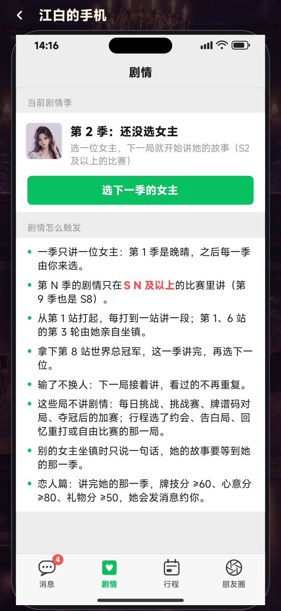
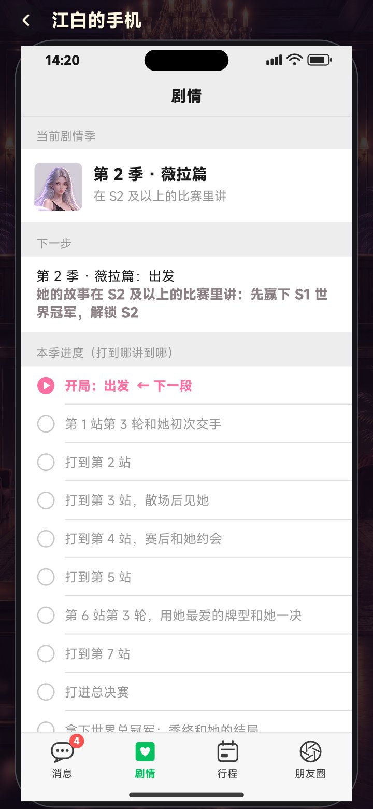
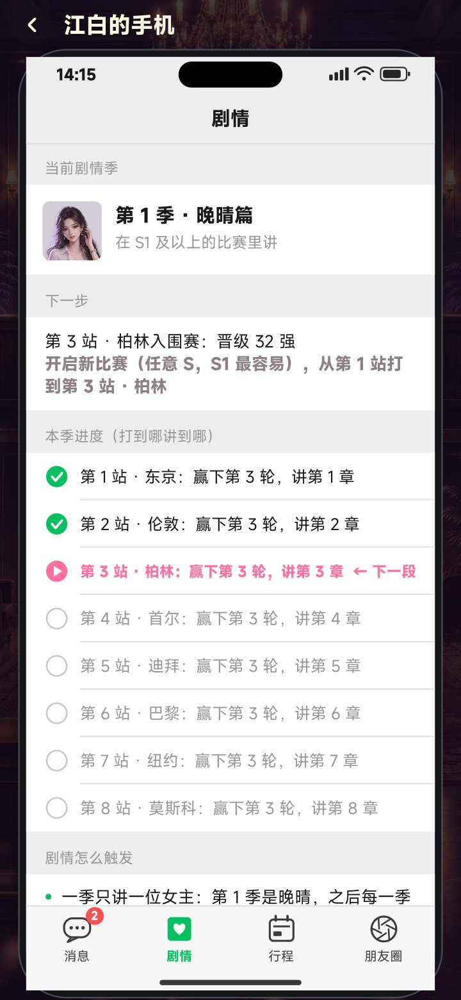
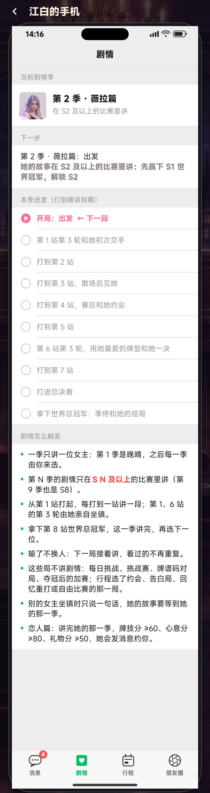

剧情触发：手机新增「剧情」页 + 没选女主时的引导
11-14 · 截图都是游戏本体实机渲染 · 还没有提交审核，等你确认
加了什么
- 手机新增「剧情」标签（消息 / 剧情 / 行程 / 朋友圈）。这一页包括：
- 当前剧情季：第几季，讲谁，要 S 几；
- 下一步：和大厅的「下一目标」一致，比如告诉玩家 S 不够要先拿哪个冠军；
- 本季进度：8 站逐站列出，标成已讲 ✓、下一段 ▶ 或未到 ○，只说「打到哪一站、赢哪一轮」，不剧透内容；
- 剧情怎么触发：8 条规则，包括哪些局不讲剧情、输了怎么办、恋人篇的条件。
- 没选下一季女主时：
- 每次启动游戏，进大厅后自动弹出「第 N 季 · 和谁相遇」。如果大厅已有别的弹窗，会等它关掉再弹。可以点「稍后再选」，下次启动还会再提示。
- 点「开启新比赛」时也会先弹选择。可以选一位，可以让「晚晴帮我选」随机一位，也可以「这局先不讲剧情，直接开打」。选好后自动把 S 调到她要求的档位再开赛。
- 手机右侧图标亮红点。「剧情」页里有绿色按钮「选下一季的女主」。
- 点大厅底部的「下一目标」，直接弹出选择。
- 有剧情季时点「下一目标」，打开手机「剧情」页。
- 新增埋点：
season_nag（自动弹出选择）。season_pick加了from字段，记录玩家是从启动、开新比赛、手机还是大厅目标选的。



